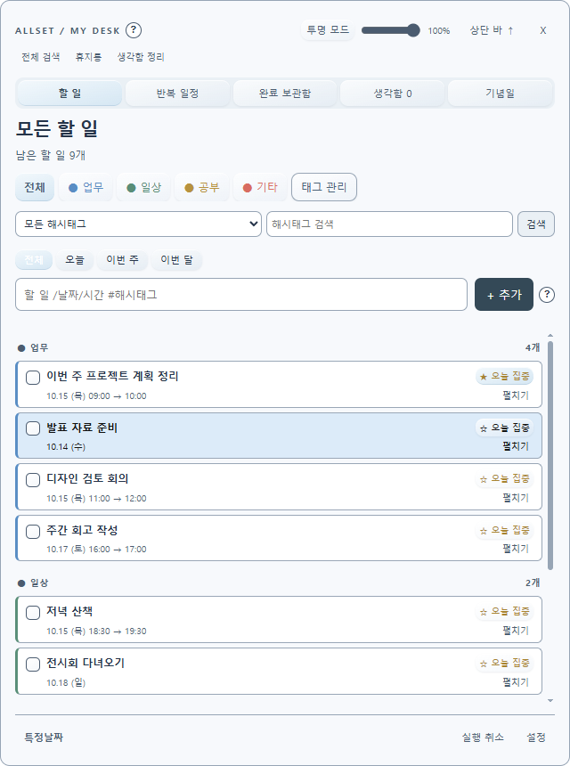
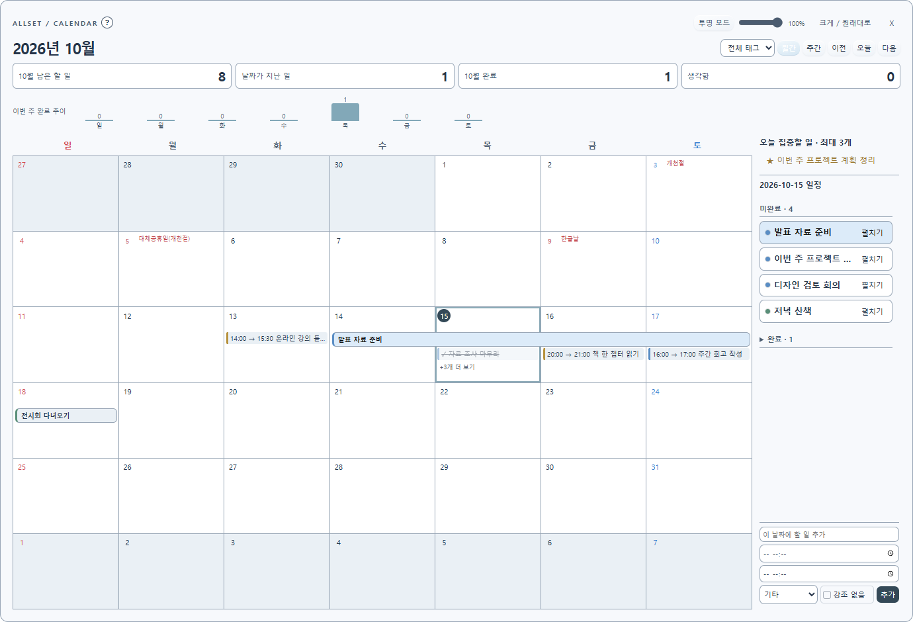
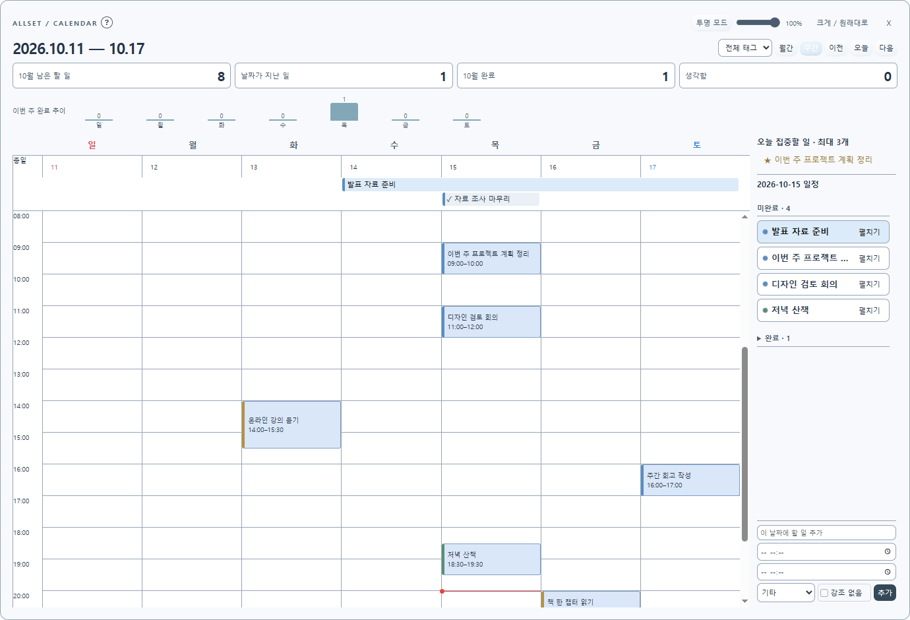

양쪽 앱에서 같은 Allset 계정과 Google 계정을 사용합니다.
Allsetby codepretender
메모도 일정도,
Allset 하나로.
떠오른 생각을 가볍게 적고, 해야 할 일을 한눈에.
기념일·업무 공정률·시간표까지 한곳에서 관리하세요.
Microsoft Store에서 무료 다운로드 ↗

이미지를 누르면 원본 크기로 볼 수 있습니다.
Allset for Android · 출시 준비 중책상에서 정리한 하루,
책상에서 정리한 하루,
모바일에서도 이어서.
PC에 적어 둔 할 일과 일정을 모바일에서도 확인하세요. Allset Android 버전과 PC–모바일 연동을 준비하고 있습니다.
출시 소식과 다운로드 주소는 이 홈페이지에 안내합니다.
Google Drive 연동 방식 알아보기 ↓한 기기에서 저장 후 동기화하고, 다른 기기에서도 동기화를 눌러 가져옵니다.
기본 로컬 기능은 무료. 기기 간 연동이 필요할 때 1회 구매하세요.
챙겨야 할 것들을
여기저기 흩어두지 않도록.
메모와 생각함
떠오른 생각은 단축키로 빠르게 담고 메모·태그·해시태그로 정리하세요. 할 일로 옮기거나 독립 노트 창을 열어 핀으로 고정할 수 있습니다. 제목과 상세 내용은 저장 버튼으로 확정하세요.
할 일과 달력
전체·오늘·이번 주·이번 달의 할 일을 확인하세요. 월간·주간 캘린더에서 일정을 끌어 이동하고 양끝으로 기간을 조절합니다. 월간은 6주 크기를 유지하고 넘치는 일정은 더보기로 모읍니다. 주간은 24시간표로 표시하며 주간 버튼을 누르면 현재 시간대로 이동합니다.
기념일과 디데이
양력·음력 기념일을 기록하고 디데이를 확인하세요. 기억하고 싶은 날짜를 달력에 모아둘 수 있습니다.
업무 공정률
시작일부터 날짜별 진행률을 남기세요. 이전 기록이 캘린더에 이어져 나타나며 100%가 된 날을 완료일로 기록합니다.
학기 시간표
학기 기간과 요일별 수업을 입력해 반복 일정을 등록하세요. 학생·교수 모드에서 휴강과 보강도 관리합니다.
집중과 백업
별도 뽀모도로 창으로 집중 시간을 관리하세요. 로컬 자동 백업과 파일 복원으로 기록을 보관합니다.
매주·매달 반복
요일별 반복, 매달 특정 날짜, 매달 말일을 지원합니다. 29~31일이 없는 달의 처리도 선택하세요. 캘린더에는 미래 일정도 표시하며 할일 목록과 남은 할 일 집계의 표시 시점은 별도로 설정합니다.
문장으로 빠르게 입력
“다음주목요일까지 보고서”, “운동 매달 20일 시작 오늘 종료 26.12.31 20:00”처럼 입력하세요. 날짜·시간·기간·해시태그를 인식하고 작은 (?) 도움말에서 예시를 확인할 수 있습니다.
내 화면에 맞게
메인바·메인창·캘린더·노트의 위치와 크기를 기억합니다. 투명도, 항상 위, 바탕화면 모드, 글꼴·크기·테마·버튼 모양을 조절하고 탭 순서와 태그 색도 바꿀 수 있습니다. 입력창과 캘린더의 태그 순서도 메인창에 맞춰집니다.
완료 기록과 알림
완료 보관함, 실행 취소와 휴지통으로 기록을 관리하세요. 일정마다 알림 시점을 지정하고 오늘 집중할 일은 최대 3개로 골라둘 수 있습니다.
한 달은 넓게,
하루는 시간에 맞게.
최신 Windows 개발판의 무료 기능을 실제로 캡처했습니다. 화면의 일정은 소개용 예시이며, Store 공개 버전과 일부 차이가 있을 수 있습니다.


프로젝트부터 하루의 기록까지.
Microsoft Store에 Allset 1.0.3 업데이트가 출시되었습니다. 프로젝트·목표·여러 시각 알림 등 새 기능을 지금 무료로 이용하세요. 기존 사용자는 Microsoft Store 라이브러리에서 업데이트를 확인할 수 있습니다.
할 일을 프로젝트로
- 지금·다음·대기·완료 작업 보드
- 날짜와 시간이 있는 작업은 캘린더에 연결
- 프로젝트와 캘린더의 완료 상태 연동
- 시작일 직접 수정과 기간 막대 드래그
알림과 기록을 내 방식대로
- 종일 알림을 하루 여러 시각으로 설정
- 목표별 달성 기록과 알림
- 반복 일정은 오늘 기준으로 태그 개수 표시
- 로컬 자동 백업과 파일 복원
화면을 더 편하게
- 같은 태그·전체·달력 재클릭으로 숨기기
- 현재 작업 중인 모니터에서 생각함 열기
- 테마에 맞춘 태그 버튼 배경
- 작업표시줄의 Allset 창 아이콘 지정
Store 1.0.3 구성: 회원가입·결제 없이 사용하는 로컬 앱입니다. Google 연동, 팀 공유, Excel 내보내기, 앱 내 광고와 광고 팝업은 포함하지 않습니다. 아래 모바일·Google 안내는 별도로 준비 중인 지원 버전에 관한 내용입니다.
내 Google Drive로 백업하고,
기기 사이의 기록을 이어가세요.
Google 연결을 지원하는 Allset 통합 테스트 버전에서는 사용자가 선택한 Google 계정으로 백업·복원과 수동 동기화를 사용할 수 있습니다. Windows·Mac·Android의 호환 버전에서 같은 Google 계정을 연결해 사용합니다. 플랫폼과 버전에 따라 지원 항목이 다를 수 있습니다.
버전 안내: Microsoft Store 무료판은 로컬 기능만 제공하며 Google 연결을 포함하지 않습니다. 아래 설명은 Google 연결을 지원하는 테스트 버전에 적용됩니다. 기본 메모·일정 기능에는 Google 연결이 필요하지 않습니다.
왜 Google 권한이 필요한가요?
연결할 계정을 식별하고 화면에 표시하기 위해 이메일 및 이메일 확인 정보를 사용합니다. Google Drive의 앱 전용 저장 공간에 Allset 백업과 동기화 기록을 읽고 쓰기 위해 drive.appdata 권한을 요청합니다.
무엇이 전송되나요?
백업 대상 메모·할 일·일정·태그·완료 기록·목표 등과 설정이 포함될 수 있습니다. 수동 동기화는 지원 항목의 변경 내용과 기기별 변경 이력을 교환합니다. 일반 Drive 파일 전체를 읽는 권한은 요청하지 않습니다.
언제 연결하고 해제하나요?
동기화 버튼을 눌렀을 때 양쪽 변경 내용을 병합하며 충돌은 확인하거나 선택할 수 있도록 처리합니다. 자동 백업은 지원 버전에서 사용자가 켠 경우에만 실행됩니다. 앱에서 연결을 해제하고 Google 계정에서 권한을 철회할 수 있습니다.
백업 복원과 수동 동기화는 서로 다른 기능입니다. 모든 설정·창 위치·프로젝트 보드가 기기 사이에서 동일하게 동기화되는 것은 아닙니다. Google 데이터는 요청한 기능을 제공하는 데 사용하며 판매, 광고 타기팅 또는 범용 AI 모델 학습에 사용하지 않습니다.
Made by codepretender하루의 일을,
하루의 일을,
조금 더 간편하게.
codepretender는 일상과 업무에서 필요한 도구를 만듭니다. Allset은 메모, 일정, 기념일, 업무 공정률과 시간표를 한곳에서 관리하는 데스크톱 앱입니다.
Windows에서 무료로 시작하세요.
Allset Store 무료판은 회원가입과 결제 없이 사용할 수 있는 Windows 무료판입니다. Microsoft Store에서 설치하고 메모와 일정을 내 컴퓨터에 보관하세요.
Microsoft Store에서 다운로드 ↗